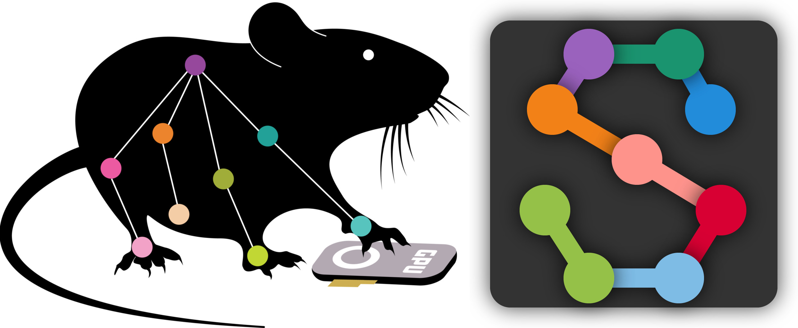
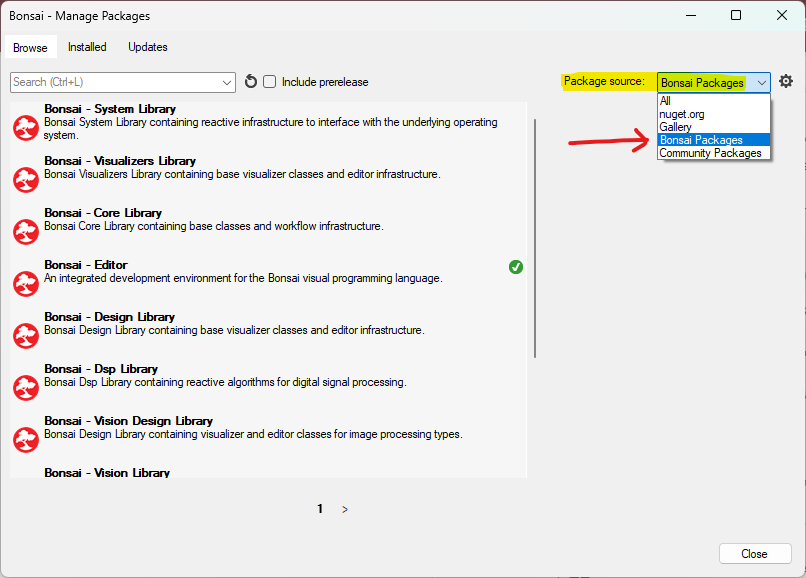
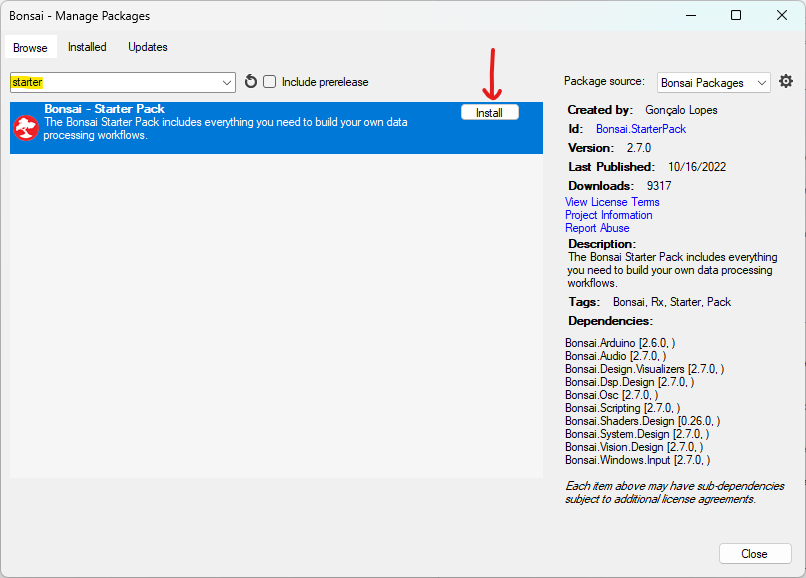

Computer Vision and Any Coaxial Headstage#
Note
To commutate in real-time using computer vision, a high-end NVIDIA graphics card is recommended. The better the GPU, the more computationally heavy tasks your computer will be able to perform in real-time such as processing higher resolution images or more frames per second.
There are multiple pose-estimation software suites that can be interfaced with Bonsai and a camera to automate commutation of the coaxial tether attached to the head stage of a freely moving animal using computer vision. They are SLEAP and DeepLabCut
SLEAP#
This section outlines how to use Bonsai and SLEAP to automate commutation of the coaxial tether connected to the headstage of a freely moving animal using computer vision.
Follow the Quick Start to ensure you can control the commutator using Bonsai.
Install the Bonsai.Sleap.Design and Bonsai.StarterPack Packages from Bonsai’s package manager.
Select Bonsai Feed
Install Bonsai.Sleap.Design and Bonsai.StarterPack by searching and clicking install. For example:

Prepare your network model for automating commutation:
Follow these instructions to train a network model if you do not already have one
Download, configure, and run the following Bonsai workflow for automating commutation using SLEAP:

 sleap-commutate.zip
sleap-commutate.zip
Direct the Algorithm node/sub-workflow to your trained network (.pb file) by single-left-clicking the Algorithm node and setting the value for ModelFileName
Direct the Algorithm node/sub-workflow to your network configuration (.json file) by single-left-clicking the PredictSinglePose node and setting the value for TrainingConfig
Todo
set up camera, save file
Note
Be sure to configure the PortName property of the Commutator node to reflect the port to which the commutator is connected.
Run the workflow in Bonsai. If all above steps are correctly performed, the commutator will follow mouse rotations